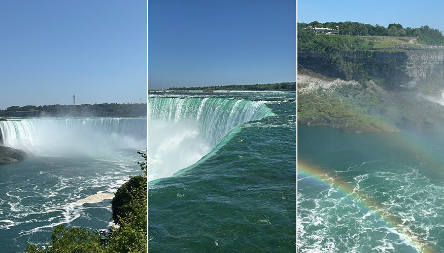
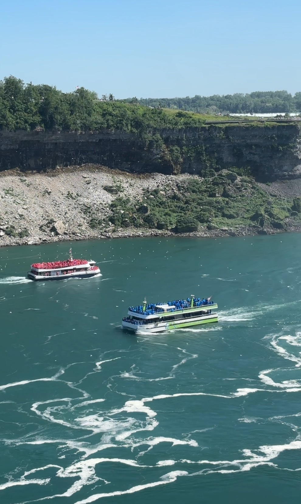
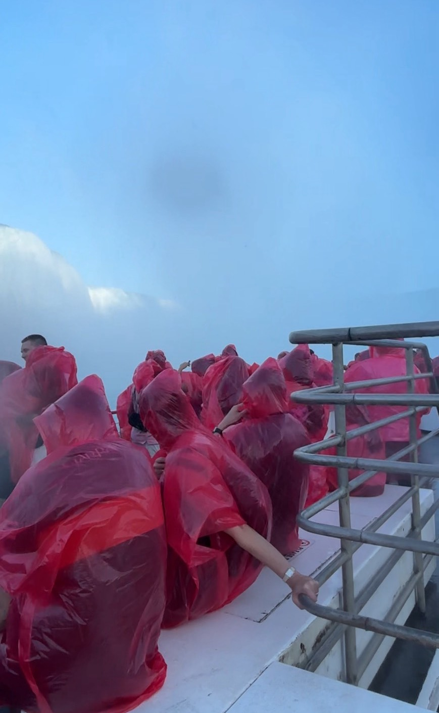
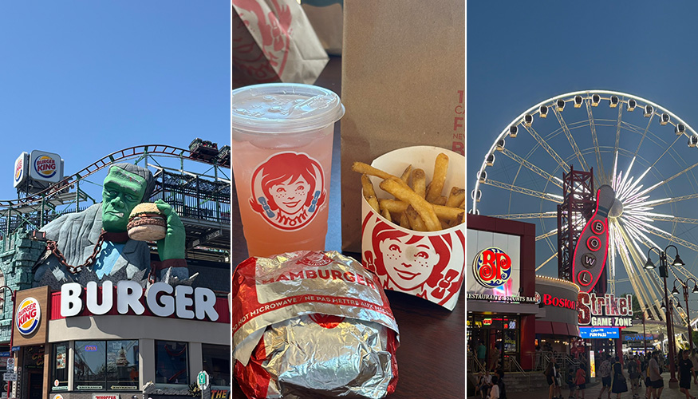
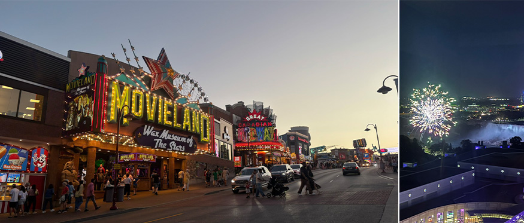

小時候只在地理課本上看到的景點跟畫面，這次是真的親眼看見了！
從多倫多出發，約一個半小時車程就能抵達世界聞名的尼加拉瀑布。這座瀑布剛好坐落在加拿大與美國的邊界上，一邊是加拿大安大略省，另一邊則是美國紐約州。站在岸邊，能欣賞壯觀的瀑布景色，還能同時看見對面國家，可以說是少數兼具自然奇景與跨國特色的熱門景點。
抵達後映入眼簾的是超級壯觀的瀑布景色，規模比圖片中大很多，川流比想像中湍急不少，在瀑布邊有許多海鷗成群翱翔，再更旁邊有因為瀑布跟陽光相照映出現的雙彩虹。水流沖下之聲、海鷗的叫聲與觀光客的驚呼聲不絕，在這裡是眼睛與耳朵衝擊的雙饗宴。
 |
我站在加拿大的領土望向瀑布，看得到對面的美國人。因為台灣是海島，沒有跟其他國家相鄰，所以這是一個很特別的視角。兩國各有可以出船去瀑布底下體驗的活動，有差異的是美國人穿的是藍色雨衣，加拿大人則是穿紅色雨衣。有時候兩船的人會互相打招呼或比賽誰的歡呼聲比較大，挺有趣的。
 |
夏天的加拿大日落時間很晚，最晚甚至會到 21:00 才日落，因此，我跟朋友選了最後第二班的船班，印象中是 18:00，那是個人比較少但還是陽光依舊普照的時段，在船上我們可以近距離觀看瀑布沖下來的第一排震撼景色，而且船會直接開到瀑布底下，大家會當場被淋浴一番。靠近瀑布時，轟隆隆的水聲震耳欲聾，每個人都被水淋得濕透，無一倖免。不過因為陽光還很強，被淋濕的身體十分鐘就風乾了，真的是一場很新奇的體驗！
 |
在瀑布的周邊有個商圈，裡面多半是美式或義式餐廳，跟一些擺放新奇蠟像的店面，整體都是走美式風格，是加拿大的街道中很少見的裝潢，比較像走在 LA 的街頭上。周邊還有賭場，但我們沒有進去，另外也有像是台灣來的手搖店，但因為價格比台灣貴太多，就沒有買來喝。
 |
到了晚上，我和朋友買完晚餐後，匆匆回到飯店。我們住的飯店從窗外就能看到瀑布，夏季還有煙火秀，我們窩在沙發上舒服地看著窗外煙火，覺得眼前的一切都太不真實了。
這裡是個氛圍跟其他加拿大城市很不一樣的觀光景點，看到了壯麗的瀑布景觀，甚至上船體驗了該瀑布的衝擊力，瞬間感受到人類的渺小。漂亮的自然風景加上整體很 chill 的商圈與活動，來這一趟很值得！
 |